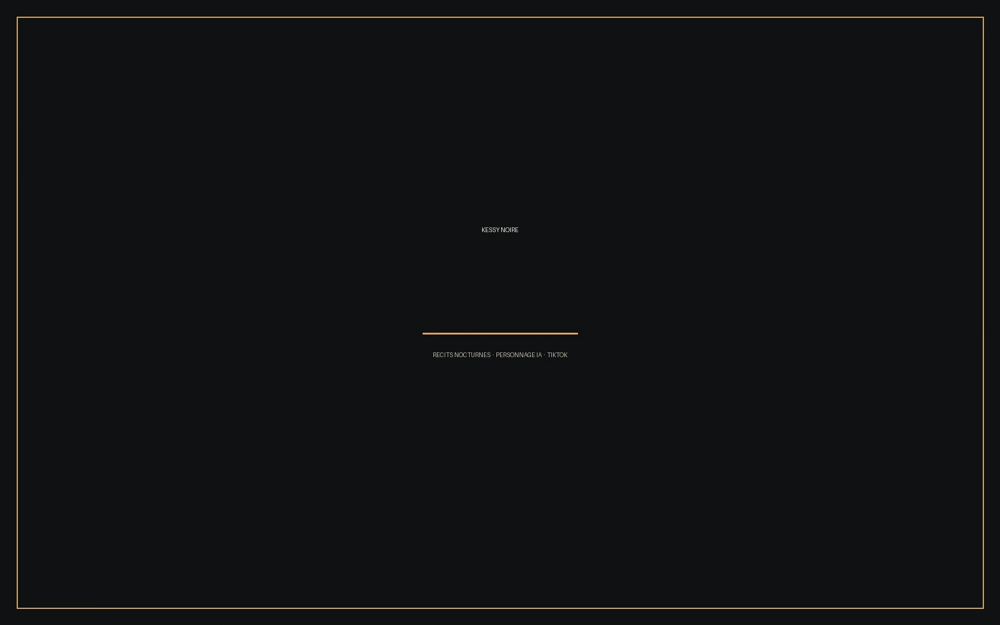

14 · Contenu & IA · 2026
Kessy Noire, un personnage IA pour des récits à suspense
Un projet de contenu TikTok : un personnage féminin fictif, des scripts de récits à cliffhanger, une chaîne de production IA et un plan de lancement réglé sur 14 jours.
- Cadre
- Projet personnel
- Rôle
- Personnage, scripts et production
- Outils
- ElevenLabs, ChatGPT, Kling, CapCut
- Format
- Vidéos verticales 1080 x 1920

Contexte
Les récits à suspense sont un format très lu sur TikTok, mais beaucoup de comptes reposent sur la même recette anonyme. L'idée de Kessy Noire : donner au format un personnage identifiable, entièrement fictif et généré par IA, et le tenir avec une cadence et des règles de production strictes.
La contrainte de départ : aucune caméra, aucun visage réel, un budget nul. Tout doit tenir dans une chaîne d'outils IA et du montage.
Ce que j'ai fait
- Identité du personnage : nom, biographie courte, voix, univers visuel et règles de cohérence d'une vidéo à l'autre.
- Scripts : structure de récit en trois temps, première coupe avant la seconde 2, cliffhanger final, textes à l'écran synchronisés.
- Prompts de production : images de personnage verrouillées par référence, animations courtes, cohérence des couleurs.
- Chaîne de production : voix off générée, images IA, animations, montage CapCut avec sous-titres et export sans filigrane.
- Plan de lancement de 14 jours : stock de plusieurs vidéos avant diffusion, triple publication TikTok, Shorts et Reels, commentaires limités à une plage horaire, règle du flop et variantes de hook.
- Conformité : label de contenu généré par IA sur chaque publication, sans exception.
Résultat
- Plateformes visées
- 3
- Plan de lancement
- 14 jours
- Vidéos en stock avant lancement
- 4
Le projet est en préparation : le personnage, les scripts, les prompts et le planning sont écrits et la chaîne de production est rodée. Aucune audience n'existe encore, et je préfère l'écrire que l'inventer.
Limites
- Projet en phase de préparation : aucun résultat d'audience à présenter.
- Dépendance aux modèles IA pour la voix et les visuels, donc des questions de coût et de disponibilité.
- L'utilisation d'un personnage IA doit rester transparente : le label est obligatoire, ce n'est pas un détail.
- La cadence de publication est exigeante et suppose une production régulière.
Ce que ça démontre
Construire un système de production de contenu, pas seulement des vidéos : un personnage cohérent, des scripts formatés, une chaîne d'outils, un calendrier et des règles de décision écrites avant le lancement.
C'est aussi une application concrète de l'IA : orchestrer plusieurs outils pour produire un livrable cohérent, ce qui est exactement ce que je fais dans mes projets techniques.